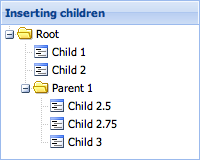
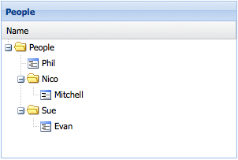

Trees
Many classes have shortcut names used when creating (instantiating) a class with a
configuration object. The shortcut name is referred to as an alias (or xtype if the
class extends Ext.Component). The alias/xtype is listed next to the class name of
applicable classes for quick reference.
Framework classes or their members may be specified as private or protected. Else,
the class / member is public. Public, protected, and private are access
descriptors used to convey how and when the class or class member should be used.
Public classes and class members are available for use by any other class or application code and may be relied upon as a stable and persistent within major product versions. Public classes and members may safely be extended via a subclass.
Protected class members are stable public members intended to be used by the
owning class or its subclasses. Protected members may safely be extended via a subclass.
Private classes and class members are used internally by the framework and are not intended to be used by application developers. Private classes and members may change or be omitted from the framework at any time without notice and should not be relied upon in application logic.
static label next to the
method name. *See Static below.Below is an example class member that we can disect to show the syntax of a class member (the lookupComponent method as viewed from the Ext.button.Button class in this case).
Let's look at each part of the member row:
lookupComponent in this example)( item ) in this example)Ext.Component in this case). This may be omitted for methods that do not
return anything other than undefined or may display as multiple possible values
separated by a forward slash / signifying that what is returned may depend on the
results of the method call (i.e. a method may return a Component if a get method calls is
successful or false if unsuccessful which would be displayed as
Ext.Component/Boolean).PROTECTED in
this example - see the Flags section below)Ext.container.Container in this example). The source
class will be displayed as a blue link if the member originates from the current class
and gray if it is inherited from an ancestor or mixed-in class.view source in the example)item : Object in the example).undefined a "Returns" section
will note the type of class or object returned and a description (Ext.Component in the
example)Available since 3.4.0 - not pictured in
the example) just after the member descriptionDefaults to: false)The API documentation uses a number of flags to further commnicate the class member's function and intent. The label may be represented by a text label, an abbreviation, or an icon.
classInstance.method1().method2().etc();false is returned from
an event handler- Indicates a framework class
- A singleton framework class. *See the singleton flag for more information
- A component-type framework class (any class within the Ext JS framework that extends Ext.Component)
- Indicates that the class, member, or guide is new in the currently viewed version
- Indicates a class member of type config
- Indicates a class member of type property
- Indicates a class member of type
method
- Indicates a class member of type event
- Indicates a class member of type
theme variable
- Indicates a class member of type
theme mixin
- Indicates that the class, member, or guide is new in the currently viewed version
Just below the class name on an API doc page is a row of buttons corresponding to the types of members owned by the current class. Each button shows a count of members by type (this count is updated as filters are applied). Clicking the button will navigate you to that member section. Hovering over the member-type button will reveal a popup menu of all members of that type for quick navigation.
Getting and setter methods that correlate to a class config option will show up in the methods section as well as in the configs section of both the API doc and the member-type menus just beneath the config they work with. The getter and setter method documentation will be found in the config row for easy reference.
Your page history is kept in localstorage and displayed (using the available real estate) just below the top title bar. By default, the only search results shown are the pages matching the product / version you're currently viewing. You can expand what is displayed by clicking on the button on the right-hand side of the history bar and choosing the "All" radio option. This will show all recent pages in the history bar for all products / versions.
Within the history config menu you will also see a listing of your recent page visits. The results are filtered by the "Current Product / Version" and "All" radio options. Clicking on the button will clear the history bar as well as the history kept in local storage.
If "All" is selected in the history config menu the checkbox option for "Show product details in the history bar" will be enabled. When checked, the product/version for each historic page will show alongside the page name in the history bar. Hovering the cursor over the page names in the history bar will also show the product/version as a tooltip.
Both API docs and guides can be searched for using the search field at the top of the page.
On API doc pages there is also a filter input field that filters the member rows using the filter string. In addition to filtering by string you can filter the class members by access level, inheritance, and read only. This is done using the checkboxes at the top of the page.
The checkbox at the bottom of the API class navigation tree filters the class list to include or exclude private classes.
Clicking on an empty search field will show your last 10 searches for quick navigation.
Each API doc page (with the exception of Javascript primitives pages) has a menu view of metadata relating to that class. This metadata view will have one or more of the following:
Ext.button.Button class has an alternate class name of Ext.Button). Alternate class
names are commonly maintained for backward compatibility.Runnable examples (Fiddles) are expanded on a page by default. You can collapse and expand example code blocks individually using the arrow on the top-left of the code block. You can also toggle the collapse state of all examples using the toggle button on the top-right of the page. The toggle-all state will be remembered between page loads.
Class members are collapsed on a page by default. You can expand and collapse members using the arrow icon on the left of the member row or globally using the expand / collapse all toggle button top-right.
Viewing the docs on narrower screens or browsers will result in a view optimized for a smaller form factor. The primary differences between the desktop and "mobile" view are:
The class source can be viewed by clicking on the class name at the top of an API doc page. The source for class members can be viewed by clicking on the "view source" link on the right-hand side of the member row.
The Tree Panel Component is one of the most versatile Components in ExtJS and is an excellent tool for displaying hierarchical data in an application. Tree Panel extends from the same class as Grid Panel, so, most all of the benefits of Grid Panels - features, extensions, and plugins can also be used on Tree Panels. Things like columns, column resizing, dragging and dropping, renderers, sorting and filtering can be expected to work similarly for both components.
Let's start by creating a very simple Tree.
This Tree Panel renders itself to the document body. We defined a root
node that is expanded by default. The root node has three
children, the first two of which are leaf nodes which means they cannot have any
children. The third node is not a leaf node and has has one child leaf node. The
text property is used as the node's text label.
Internally, a Tree Panel stores its data in a TreeStore. The above example uses the root config as a shortcut for configuring a Store. If we were to configure the Store separately, the code would look something like this:
var store = Ext.create('Ext.data.TreeStore', {
root: {
text: 'Root',
expanded: true,
children: [
{
text: 'Child 1',
leaf: true
},
{
text: 'Child 2',
leaf: true
},
...
]
}
});
Ext.create('Ext.tree.Panel', {
title: 'Simple Tree',
store: store,
...
});
It is important to note that the Store persona of the TreeStore manages its own content according to the linked node structure based on the root node.
Only visible nodes are represented in the store. When a parent node is expanded, its child nodes are inserted into the store immediately following it. When that node is collapsed, those nodes are removed from the store.
Nodes which are deemed to not be visible in any way, whether due to ancestor collapsing, or due to filtering are NOT present in the Store's record collection.
All nodes are still accessible through the tree hierarchy
The store is purely used to drive the user interface. Nodes are mapped into the view on a one-to-one basis.
To manipulate the content of the store, you must ALWAYS go through the interface that Ext.data.TreeModel provides to insert, append or remove nodes to or from other nodes.
Certain methods such as each and collect are re-implemented at the TreeStore level to offer access to all nodes in the structure instead of only the visible nodes that are in the flat Store persona.
In the above examples, we set a couple of different properties on Tree nodes. But what are nodes exactly? As mentioned before, the Tree Panel is bound to a TreeStore. A Store in ExtJS manages a collection of Model instances.
In the absence of a configured Model type, the Store will use the Ext.data.TreeModel class to encapsulate the data. The is a Model subclass which has been decorated with fields, methods, and properties that are required for it to be used in a Tree. The following is a screenshot that shows the structure of a node in the developer tools.

In order to see the full set of fields, methods, and properties available on nodes, see the API documentation for the TreeModel class.
The Models you define for use in your trees should extend the Ext.data.TreeModel class.
Let's try something simple. When you set the useArrows configuration to true, the Tree Panel hides the lines and uses arrows as expand and collapse icons.
Setting the rootVisible property to false
visually removes the root node. By doing this, the root node will automatically be
expanded. The following image shows the same tree with rootVisible set to false
and lines set to false.

Since Tree Panel extends from the same base class as Grid Panel adding more columns is very easy to do.
The columns configuration expects an array of
Ext.grid.column.Column configurations just like a
Grid Panel would have. The only difference is that a Tree Panel
requires at least one Column with an xtype of 'treecolumn'. This type of column has
tree-specific visual effects like depth, lines, and expand and collapse icons. A typical
Tree Panel would have only one 'treecolumn'.
The fields configuration is passed on to the Ext.data.Model that the
internally created Store uses. Notice how the
dataIndex configurations on the columns map
to the fields we specified - name and description.
It is also worth noting that when columns are not defined, the Tree will automatically
create one single treecolumn with a dataIndex set to 'text'.
If no defined columns are configured with header text, then the header container will not be shown.
The root node for the Tree Panel does not have to be specified in the initial configuration. We can always add it later:
var tree = Ext.create('Ext.tree.Panel');
tree.setRootNode({
text: 'Root',
expanded: true,
children: [{
text: 'Child 1',
leaf: true
}, {
text: 'Child 2',
leaf: true
}]
});
Although this is useful for very small Trees with only a few static nodes, most Tree Panels will contain many more nodes. So let's take a look at how we can programmatically add new nodes to the Tree.
var root = tree.getRootNode();
var parent = root.appendChild({
text: 'Parent 1'
});
parent.appendChild({
text: 'Child 3',
leaf: true
});
parent.expand();
Every node that is not a leaf node has an appendChild method which accepts a Node, or a config object for a Node, as its first parameter and returns the Node that was appended. The above example also calls the expand method to expand the newly created parent.
Also useful is the ability to define children inline when creating the new parent nodes. The following code gives us the same result.
var parent = root.appendChild({
text: 'Parent 1',
expanded: true,
children: [{
text: 'Child 3',
leaf: true
}]
});
Sometimes we want to insert a node into a specific location in the Tree instead of
appending it. Besides the appendChild method, Ext.data.TreeModel also
provides insertBefore and
insertChild methods.
var child = parent.insertChild(0, {
text: 'Child 2.5',
leaf: true
});
parent.insertBefore({
text: 'Child 2.75',
leaf: true
}, child.nextSibling);
The insertChild method expects an index at which the child will be inserted. The
insertBefore method expects a reference node. The new node will be inserted before the
reference node.

TreeModel also provides several more properties on nodes that can be used to reference other nodes.
Loading and saving Tree data is somewhat more complex than dealing with flat data because of all the fields that are required to represent the hierarchical structure of the Tree. This section will explain the intricacies of working with Tree data.
The first and most important thing to understand when working with Tree data is how the TreeModel class' fields work. Every node in a Tree is simply a Model instance decorated with the TreeModel's fields and methods. Assume for a moment that an application has a Model called "Person". A Person only has two fields - "id" and "name".
In order to use that in a TreeStore, extend the TreeModel class:
Ext.define('Person', {
extend: 'Ext.data.TreeModel',
fields: ['id', {
name: 'name',
type: 'string'
}]
});
The resulting model has many extra fields which are used to manage the node's context within the tree structure:
console.log(store.getRoot().getFields().length); // outputs '27'
The Person model's prototype got 25 extra fields added to it just by extending
TreeModel.
So what exactly are these 25 extra fields, and what do they do? A quick look at the TreeModel source code reveals that it decorates the Model with the following fields. These fields are used internally to store information relating to the tree's structure and state:
{
name: 'parentId',
type: idType,
defaultValue: null,
useNull: idField.useNull
}, {
name: 'index',
type: 'int',
defaultValue: -1,
persist: false,
convert: null
}, {
name: 'depth',
type: 'int',
defaultValue: 0,
persist: false,
convert: null
}, {
name: 'expanded',
type: 'bool',
defaultValue: false,
persist: false,
convert: null
}, {
name: 'expandable',
type: 'bool',
defaultValue: true,
persist: false,
convert: null
}, {
name: 'checked',
type: 'auto',
defaultValue: null,
persist: false,
convert: null
}, {
name: 'leaf',
type: 'bool',
defaultValue: false
}, {
name: 'cls',
type: 'string',
defaultValue: '',
persist: false,
convert: null
}, {
name: 'iconCls',
type: 'string',
defaultValue: '',
persist: false,
convert: null
}, {
name: 'icon',
type: 'string',
defaultValue: '',
persist: false,
convert: null
}, {
name: 'root',
type: 'boolean',
defaultValue: false,
persist: false,
convert: null
}, {
name: 'isLast',
type: 'boolean',
defaultValue: false,
persist: false,
convert: null
}, {
name: 'isFirst',
type: 'boolean',
defaultValue: false,
persist: false,
convert: null
}, {
name: 'allowDrop',
type: 'boolean',
defaultValue: true,
persist: false,
convert: null
}, {
name: 'allowDrag',
type: 'boolean',
defaultValue: true,
persist: false,
convert: null
}, {
name: 'loaded',
type: 'boolean',
defaultValue: false,
persist: false,
convert: null
}, {
name: 'loading',
type: 'boolean',
defaultValue: false,
persist: false,
convert: null
}, {
name: 'href',
type: 'string',
defaultValue: '',
persist: false,
convert: null
}, {
name: 'hrefTarget',
type: 'string',
defaultValue: '',
persist: false,
convert: null
}, {
name: 'qtip',
type: 'string',
defaultValue: '',
persist: false,
convert: null
}, {
name: 'qtitle',
type: 'string',
defaultValue: '',
persist: false,
convert: null
}, {
name: 'qshowDelay',
type: 'int',
defaultValue: 0,
persist: false,
convert: null
}, {
name: 'children',
type: 'auto',
defaultValue: null,
persist: false,
convert: null
}, {
name: 'visible',
type: 'boolean',
defaultValue: true,
persist: false,
}, {
name: 'text',
type: 'string',
persist: 'false
}
It is important to note that all of the above field names should be treated as "reserved" names. For example, it is not allowed to have a field called "parentId" in a Model if that Model is intended to be used in a Tree, since the Model's field will override the TreeModel field. The exception to this rule is when there is a legitimate need to override the persistence of a field.
Most of TreeModel's fields default to persist: false. This means they are
non-persistent fields by default. Non-persistent fields will not be saved via the Proxy
when calling the TreeStore's sync method or calling save() on the Model. In most
cases, the majority of these fields can be left at their default persistence setting,
but there are cases where it is necessary to override the persistence of some fields.
The following example demonstrates how to override the persistence of a
TreeModel field. When overriding a TreeModel field it is important to only
change the persist property. The name, type, and defaultValue properties
should never be changed.
// overriding the persistence of TreeModel fields in a Model definition
Ext.define('Person', {
extend: 'Ext.data.TreeModel',
fields: [
// Person fields
{ name: 'id', type: 'int' },
{ name: 'name', type: 'string' }
// override a non-persistent TreeModel field to make it persistent
{ name: 'iconCls', type: 'string', defaultValue: null, persist: true }
]
});
Let's take a more in-depth look at each TreeModel field and the scenarios in which it
might be necessary to override its persist property. In each example below, it is
assumed that a Server Proxy is being used unless otherwise
noted.
Persistent by default:
parentId - used to store the id of a node's parent node. This field should always
be persistent and should not be overridden.leaf - used to indicate that the node is a leaf node and therefore cannot have
children appended to it. This field should not normally need to be overridden.Non-persistent by default:
index - used to store the order of nodes within their parent. When a node is
inserted or
removed, all of its sibling nodes after
the insertion or removal point will have their indexes updated. If desired, the
application can use this field to persist the ordering of nodes.
However, if the server uses a different method of storing order, it may be more appropriate to leave the index field as non-persistent. When using a WebStorage Proxy if storing order is required, this field must be overridden to be persistent.
Also if client-side sorting is being used it
is recommended for the index field to be left as non-persistent, since sorting
updates the indexes of all the sorted nodes, which would cause them to be persisted
on next sync or save if the persist property is true.
depth - used to store the depth of a node in the Tree hierarchy. Override this
field to turn on persistence if the server needs to store the depth field. When
using a WebStorage Proxy it is recommended to not
override the persistence of the depth field since it is not needed to properly
store the Tree structure and will just take up extra space.
checked - this field should be overridden to be persistent if the Tree is using
the checkbox featureexpanded - used to store the expanded/collapsed state of a node. This field
should not normally need to be overridden.expandable - used internally to indicate that this node is expandable. Do not
override the persistence of this field.cls - used to apply a CSS class to the node when it is rendered in a TreePanel.
Override this field to be persistent if desired.iconCls - used to apply a css class to the node's icon when it is rendered in a
TreePanel. Override this field to be persistent if desired.icon - used to apply a custom icon to the node node when it is rendered in a
TreePanel. Override this field to be persistent if desired.root - used to indicate that this node is the root node. This field should not be
overridden.isLast - used to indicate that this node is the last of its siblings. This field
should not normally need to be overridden.isFirst - used to indicate that this node is the first of its siblings. This field
should not normally need to be overridden.allowDrop - used internally to deny dropping on the node. Do not override the
persistence of this field.allowDrag - used internally to deny dragging the node. Do not override the
persistence of this field.loaded - used internally to indicate that the node's children have been loaded.loading - used internally to indicate that the proxy is in the process of loading
the node's children. Do not override the persistence of this field.href - used to specify a url that the node should be a link to. Override to be
persistent if desired.hrefTarget - used to specify the target for the href. Override to be persistent
if desired.qtip - used to add a tooltip text to the node. Override
to be persistent if desired.qtitle - used to specify the title for the tooltip. Override to be persistent
if desired.children - used internally when loading a node and its children all in one
request. Do not override the persistence of this field.There are two ways to load Tree data. The first is to for the proxy to fetch the entire Tree all at once. For larger Trees where loading everything at once is not ideal, it may be preferable to use the second method - dynamically loading the children for each node when it is expanded.
Internally, the Tree only loads data in response to a node being expanded. However the
entire hierarchy can be loaded if the proxy retrieves a nested object containing the
whole Tree structure. To accomplish this, initialize the TreeStore's root node to
expanded:
Ext.define('Person', {
extend: 'Ext.data.Model',
fields: [
{ name: 'id', type: 'int' },
{ name: 'name', type: 'string' }
],
proxy: {
type: 'ajax',
api: {
create: 'createPersons',
read: 'readPersons',
update: 'updatePersons',
destroy: 'destroyPersons'
}
}
});
var store = Ext.create('Ext.data.TreeStore', {
model: 'Person',
root: {
name: 'People',
expanded: true
}
});
Ext.create('Ext.tree.Panel', {
renderTo: document.body,
width: 300,
height: 200,
title: 'People',
store: store,
columns: [{
xtype: 'treecolumn',
header: 'Name',
dataIndex: 'name',
flex: 1
}]
});
Assume that the readPersons url returns the following json object
{
"success": true,
"children": [
{ "id": 1, "name": "Phil", "leaf": true },
{ "id": 2, "name": "Nico", "expanded": true, "children": [
{ "id": 3, "name": "Mitchell", "leaf": true }
]},
{ "id": 4, "name": "Sue", "loaded": true }
]
}
That's all that's needed to load the entire tree.

Important items to note:
loaded property to true. Otherwise the
proxy will attempt to load children for these nodes when they are expanded.loaded property on a
node in the JSON response can it set any of the other non-persistent fields?
The answer is yes - sometimes. In the example above, the node with name "Nico" has its
expanded field set to true so that it will be initially displayed as expanded in the
Tree Panel. Caution should be exercised as there are cases where this is not
appropriate and could cause serious problems, like setting the root property on a node
that is not the root node for example. In general, loaded and expanded are the
only cases where it is recommended for the server to set a non-persistent field in the
JSON response.For larger Trees it may be desirable to only load parts of the tree by loading child
nodes only when their parent node is expanded. Suppose in the above example, that the
node with name "Sue" does not have its loaded field set to true by the server
response. The Tree would display an expander icon next to the node. When the node is
expanded, the proxy will make another request to the readPersons url that looks
something like this:
/readPersons?node=4
This tells the server to retrieve the child nodes for the node with an id of 4. The
data should be returned in the same format as the data that was used to load the root
node:
{
"success": true,
"children": [
{ "id": 5, "name": "Evan", "leaf": true }
]
}
Now the Tree looks something like this:

Creating, updating, and deleting nodes is handled automatically and seamlessly by the Proxy.
// Create a new node and append it to the tree:
var newPerson = Ext.create('Person', { name: 'Nige', leaf: true });
store.getNodeById(2).appendChild(newPerson);
Since the proxy is defined directly on the Model, the Model's save() method can be used to persist the data:
newPerson.save();
store.getNodeById(1).set('name', 'Philip');
store.getRootNode().lastChild.remove();
After creating, updating, and removing several nodes, they can all be persisted in one operation by calling the TreeStore's sync() method:
store.sync();
Remote filtering works the same as for any other store type. The filters are encoded and passed to the server which must then respond with only the required data.
Local filtering for trees is different from filtering flat datasets like in grids.
A filter condition may include nodes which are below parent nodes which are excluded by the filter condition.
By default, nodes which pass the filter condition, but who's parent does not are not included in the store. This is top down filtering, and may be reconfigured using the filterer config.
To force the inclusion of ancestor nodes of nodes which pass the filter, configure
filterer as bottomup.
See The Filtered Tree example for an illustration of this type of filtering.
This kind of filtering requires that the tree structure be traversed to ascertain the visibility status of all nodes prior to updating the view.
For fine grained, or programmatic filtering of individual records by application
code, you can set the visible field of a TreeModel, and the view will honor
that setting and show or hide the node depending on the value.


 Ext JS | Terms of Use
Ext JS | Terms of Use